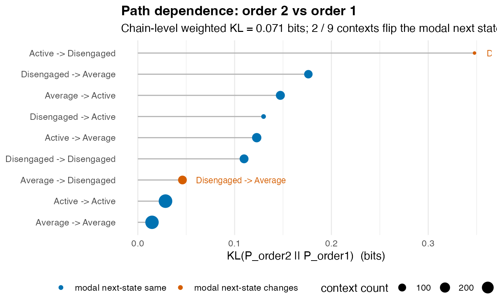

path_dependence() shows, context by context, where a first-order
Markov chain misses what longer histories say about the next state. For
every context of k = order consecutive states
\(c = (s_1, \ldots, s_k)\), it compares the
observed distribution of the next state after that context,
\(P_k(s_{k+1} \mid c)\), with the first-order
prediction \(P_1(s_{k+1} \mid s_k)\) from the last
state alone. Its table has one row per context, sorted by the
Kullback-Leibler divergence between the two, with both entropies and
whether the most likely next state changes. It reads wide sequence data
or a network built from sequences.
A KL of 0 means the longer history adds nothing in that context; a
positive entropy drop means it sharpens the prediction; and a flip means
it changes which next state is most likely, not only how confident the
prediction is. The values are computed from the observed counts and
come without a test, and a context seen a few times gives a noisy KL:
read n beside it and raise min_count when small contexts lead the
table. Whether order k is needed for the chain as a whole is tested by
markov_order_test(); path_dependence() breaks that decision down by
context.
Usage
path_dependence(x, order = 2L, min_count = 5L, base = 2)
# S3 method for class 'net_path_dependence'
print(x, top = 10L, digits = 3L, ...)
# S3 method for class 'net_path_dependence'
summary(object, ...)
# S3 method for class 'summary.net_path_dependence'
print(x, digits = 3L, ...)
# S3 method for class 'net_path_dependence'
plot(x, top = 15L, title = NULL, ...)Arguments
- x
The sequences: a wide data frame or matrix (one row per sequence, one column per time step), or a
netobjectbuilt from sequences, whose stored data are read. A data frame needs position columns named as a numbered run (T1,T2, ...); any other frame, a one-hot network and an association network raise an error of classnestimate_bad_input, and a network without its data stopspath_dependence(). Paths that touch a missing cell are left out. For theprint()methods: anet_path_dependenceobject or itssummary(); for theplot()method: anet_path_dependenceobject.- order
The length k of the conditioning context, a whole number of at least 2; a non-integer value is an error, not truncated. Default
2, which compares a two-state history with the last state alone;3compares a three-state history, and so on. The data need at leastorder + 1time steps.- min_count
The number of times a context must be observed to be reported, a whole number of at least 1. Default
5. Contexts seen less often give noisy KL estimates; when no context reachesmin_count,path_dependence()stops with an error.- base
The logarithm base for the entropies and the KL divergence:
2(default) gives bits,exp(1)nats and10hartleys. A positive number other than 1.- top
For the
print()andplot()methods: how many contexts to show, highest KL first. Default10forprint()and15forplot().- digits
For the
print()methods: decimal places of the entropies, the entropy drop and the KL, in the table and in the chain-level summaries. Default3.- ...
- object
For the
summary()method: anet_path_dependenceobject.- title
For the
plot()method: the plot title. DefaultNULL, which builds"Path dependence: order k vs order 1"from the fitted order.
Value
A net_path_dependence object. print() shows the chain-level
summaries and the top contexts by KL; summary() returns a
summary.net_path_dependence holding the full sorted table, which
prints every context and the chain-level summaries; plot() returns a
ggplot lollipop chart of each context's KL, highest first, with point
size proportional to the context's count and the contexts whose modal
next state flips coloured and labelled with the change. The print()
methods return their input invisibly. The object's fields:
- contexts
Data frame with one row per context, sorted by KL (descending), with columns
context(such as"A -> B"),n(its count),H_order1(entropy of \(P_1(\cdot \mid s_k)\)),H_orderk(entropy of \(P_k(\cdot \mid c)\)),H_drop(H_order1 - H_orderk),KL(\(D_{KL}(P_k \| P_1)\)),top_o1(the most likely next state under order 1),top_ok(the most likely next state under order k) andflips(whether the two differ).- chain
List of chain-level summaries:
KL_weighted(the count-weighted mean KL over contexts),H_drop_weighted(the count-weighted mean entropy drop),n_contextsandn_flips(the number of contexts whose most likely next state changes).- order
The context length used.
- base
The logarithm base used.
- min_count
The minimum context count used.
- states
The states observed.
Details
For each context \(c\) observed at least min_count times, the
function computes:
the empirical conditional \(P_k(\cdot \mid c)\) from the counts of the paths of k + 1 states;
the first-order prediction \(P_1(\cdot \mid s_k)\) from the most recent state alone, estimated from all pairs of consecutive states;
the entropy drop \(H(P_1) - H(P_k)\), the uncertainty removed by the longer memory in this context;
the Kullback-Leibler divergence \(D_{KL}(P_k \,\|\, P_1)\), the expected extra surprise of predicting with the first-order model when the order-k distribution holds.
A negative H_drop means the order-k context spreads its probability
over more outcomes than the last state alone does, which can be
small-sample noise or uncertainty the context adds; inspect n.
References
Cover, T.M. & Thomas, J.A. (2006). Elements of Information Theory, 2nd ed., chapters 2 and 4. Wiley. (KL divergence and conditional entropy.)
Examples
data(trajectories, package = "Nestimate")
pd <- path_dependence(as.data.frame(trajectories), order = 2)
print(pd)
#> Path Dependence (order 2 vs order 1, bits)
#>
#> Contexts: 9 (min_count = 5). Modal-prediction flips: 2.
#> Chain-level KL_weighted = 0.071 bits
#> Chain-level H_drop_weighted = 0.087 bits
#>
#> Top 9 contexts by KL:
#> context n H_order1 H_orderk H_drop KL top_o1
#> Active -> Disengaged 23 1.403 1.574 -0.171 0.348 Disengaged
#> Disengaged -> Average 122 1.354 1.352 0.003 0.176 Average
#> Average -> Active 144 1.040 1.125 -0.084 0.147 Active
#> Disengaged -> Active 29 1.040 1.361 -0.321 0.130 Active
#> Active -> Average 160 1.354 1.365 -0.011 0.123 Average
#> Disengaged -> Disengaged 139 1.403 1.156 0.247 0.110 Disengaged
#> Average -> Disengaged 134 1.403 1.430 -0.027 0.046 Disengaged
#> Active -> Active 433 1.040 0.849 0.191 0.029 Active
#> Average -> Average 419 1.354 1.229 0.126 0.015 Average
#> top_ok flips
#> Active TRUE
#> Average FALSE
#> Active FALSE
#> Active FALSE
#> Average FALSE
#> Disengaged FALSE
#> Average TRUE
#> Active FALSE
#> Average FALSE
summary(pd)
#> Path Dependence Summary (order 2 vs order 1, bits)
#>
#> All 9 contexts (sorted by KL):
#> context n H_order1 H_orderk H_drop KL top_o1
#> Active -> Disengaged 23 1.403 1.574 -0.171 0.348 Disengaged
#> Disengaged -> Average 122 1.354 1.352 0.003 0.176 Average
#> Average -> Active 144 1.040 1.125 -0.084 0.147 Active
#> Disengaged -> Active 29 1.040 1.361 -0.321 0.130 Active
#> Active -> Average 160 1.354 1.365 -0.011 0.123 Average
#> Disengaged -> Disengaged 139 1.403 1.156 0.247 0.110 Disengaged
#> Average -> Disengaged 134 1.403 1.430 -0.027 0.046 Disengaged
#> Active -> Active 433 1.040 0.849 0.191 0.029 Active
#> Average -> Average 419 1.354 1.229 0.126 0.015 Average
#> top_ok flips
#> Active TRUE
#> Average FALSE
#> Active FALSE
#> Active FALSE
#> Average FALSE
#> Disengaged FALSE
#> Average TRUE
#> Active FALSE
#> Average FALSE
#>
#> Chain-level:
#> KL_weighted H_drop_weighted n_contexts n_flips
#> 0.071 0.087 9 2
plot(pd)
